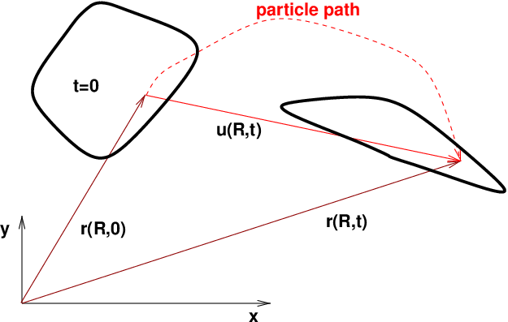
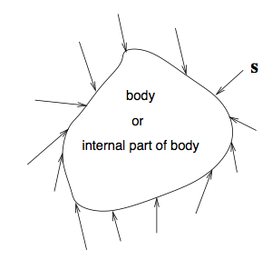
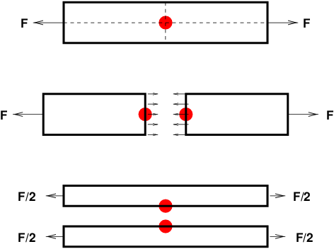
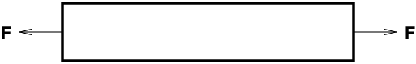
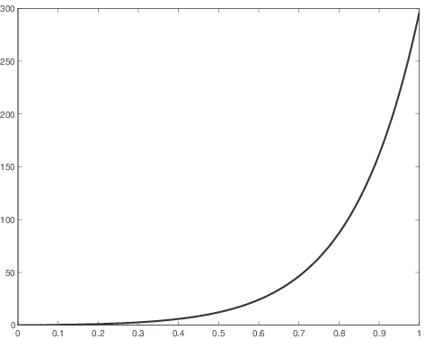

$$
\newcommand{\modten}[1]{\mathbfx{#1}}
\newcommand{\modvec}[1]{\mathbfx{#1}}
\newcommand{\x}{\mathbfx{x}}
\renewcommand{\b}{\mathbfx{b}}
\newcommand{\F}{\mathbfx{F}}
\newcommand{\n}{\mathbfx{n}}
\renewcommand{\v}{\mathbfx{v}}
\newcommand{\stress}{\modten{\sigma}}
\newcommand{\PP}{\mathbfx{P}}
\renewcommand{\SS}{\mathbfx{S}}
$$
Fundamental cardiac mechanics \\ Part 2: A glimpse of nonlinear solid mechanics
Joakim Sundnes
Jun 17, 2016
Modeling the complete muscle (1)
- The model of Rice et al (and similar models) gives the force development in a single cell.
- Cells are connected to form tissue, and embedded in an extracellular matrix consisting mainly of collagen
- As cells contract, they interact with the elastic response of the tissue
- Overall deformation and heart dynamics results from a combination of actively developed force and passive elastic forces
- Both types of forces are highly clinically relevant:
- Increased stiffness leads to reduced filling and heart failure (diastoloc HF)
- Reduced contractility leads to reduced ejection and HF (systolic HF)
- Modeling the complete muscle mechanics is based on the framework of nonlinear solid mechanics
Solid mechanics (1)
- The key variables in solid mechanics problems are stresses and strains
- Stress = force per area, strain = relative deformation
- Important distinction between small and large deformations:
- Small deformation; neglect the change in area as the material deforms
- Large deformations (> ca 5\% strain); need to consider change in area
- Small deformation problems are often linear, large deformations give nonlinear problems
Solid mechanics (2)
In short, the field of solid mechanics has three main parts:
- Kinematics; the description of motion and deformation of the material (i.e. strains)
- Balance laws; fundamental equations based on balance of mass and momentum, or equilibrium of forces/stresses in the static case
- Constitutive laws; experimentally derived laws that relate stresses to strains.
Kinematics
How do we quantify deformation/change of shape?
Deformation and displacement (1)

- The path of each particle: \( x (X, t) \)
- Initial position: \( r (X, 0) = X \) (particle label)
- Displacement field \( u \):
$$u (X ,t) = x (X,t ) - X$$
Deformation and displacement (2)
- The displacement \( u \) is often the primary unknown in solid mechanics
- \( u \) contains everything we need to know about the deformation;
- Change of shape ("true" deformation)
- Rigid mody motion (rotation and translation)
- Our goal is to relate internal forces (stresses) to deformations
- Rigid body motion does not give rise to internal forces
- We need a measure of deformation that only contains change of shape
The deformation gradient
We are interested in relative displacement between different points. It makes sense to take the derivative of the mapping:
$$
F = \frac{\partial x}{\partial X} = \nabla x = I +\nabla u
$$
This is the deformation gradient, a fundamental quantity in nonlinear solid mechanics. In particular, an infinitesimal line segment \( dX \) in the reference configuration deforms according to
$$
dx = FdX
$$
The right Cauchy-Green tensor
- The deformation gradient includes both rotation and change of shape.
- Rotation does not induce internal forces, and must be removed to get a measure of of pure change of shape.
- According to the Polar decomposition theorem, if \( F \) is non-singular we have \( F=RU \), where \( R \) is an orthogonal rotation tensor, while \( U \) is symmetric and contains no rotation.
- We introduce
$$
C = F^TF = (RU)^T(RU) = U^T R^T R U = U^T U
$$
\( C \) is called the right Cauchy-Green tensor.
The Green-Lagrange strain tensor (1)
- We are now ready to define strain
- Look at a small line segment \( dX \), which deforms to \( dx \)
- If \( ||dx || = ||dX || \): pure rotation
- \( \Rightarrow \) Suitable strain measure arises from
$$
\begin{align*}
||dx ||^2 - ||dX ||^2 &= dx^Tdx - dX^TdX \\
&= (FdX)^T(FdX)-dX^TdX \\
&= dX^TF^TFdX-dX^TdX = 2 dX E dX
\end{align*}
$$
\( E \) is the important quantity holding strain information.
The Green-Lagrange strain tensor (2)
The Green Lagrange strain tensor is the most commonly used strain tesnor for large elastic deformations. We have
$$
E = \frac{1}{2}(C-I) = \frac{1}{2}(F^TF-I)
$$
or
$$
\begin{align*}
E_{ij} &= \frac{1}{2}\left(\frac{\partial x_k}{\partial X_i}
\frac{\partial x_k}{\partial X_j}-\delta_{ij}\right) \\
&= \frac{1}{2}
\left( {\frac{\partial u_i}{\partial X_j}} + {\frac{\partial u_j}{\partial X_i}}
+ {\frac{\partial u_k}{\partial X_i}}{\frac{\partial u_k}{\partial X_j}}
\right)
\end{align*}
$$
If deformations are small we can neglect higher order terms to get
$$
E_{ij} \approx \left( {\frac{\partial u_i}{\partial X_j}} + {\frac{\partial u_j}{\partial X_i}}\right)
$$
which may be recognized as the standard linear strain tensor used for small strains:
$$
\varepsilon_{ij} = \left( {\frac{\partial u_i}{\partial x_j}} + {\frac{\partial u_j}{\partial x_i}}\right)
$$
Equilibrium of forces
Newton's second law applied to a continuous and deforming material.
Body forces

- Body forces \( \b \) are "distant" forces acting in each point of the body
- Example: gravity \( \b = \modvec{g} \)
- Example: centrifugal force \( \b = \modvec{\omega}\times\modvec{\omega}\times\modvec{r} \)
- Total force:
$$
\begin{equation*}
\modvec{B} = \int\limits_{\hbox{body}}\varrho \b dV
\end{equation*}
$$
Surface forces

- Distributed along the surface of a body or of an internal part of a body
- Stress = force per unit area, \( \modvec{s}(\x ,t) \)
- Total force:
$$
\begin{equation*}
\modvec{S}(\x,t) = \int\limits_{\hbox{surface}} \modvec{s}(\x ,t) dA
\end{equation*}
$$
The stress vector
- Stress is force per unit area (vector)
- The stress vector depends on the orientation of the area
- That is, the stress at a point on a surface depends on the location of the point (on the surface) and on the orientation of the surface at that point
Stress in a rod

Observations
- The stress at the bullet point was in one case $F/A$\\ (\( A \): area) and in another case 0!
- "Stress" means stress at a point on a surface
- The surface orientation (normal vector \( \n \)) is needed for stress vector computations
Stress vector computation
- The stress vector depends on space, time and the orientation (unit outward normal vector \( \modvec{n} \)) of the surface on which the stress vector acts
- Notation: $\modvec{s} (\modvec{r},t;\modvec{n})$\\ %(\( \modvec{s} \) varies in \( _R_^7 \), i.e., with 7 parameters!)
- Cauchy's 1. law (Cauchy's stress theorem):
$$
\begin{equation*} \modvec{s} (\modvec{r},t;\modvec{n}) = \modvec{n}(\modvec{r},t)\cdot
\stress(\modvec{r},t) \end{equation*}
$$
(\( \Rightarrow \) $\modvec{s}$ has a simple (linear) dependence on \( \n \))
The stress tensor
- The quantity \( \stress \) or \( \sigma_{ij} \) in Cauchy's 1. law is called the stress tensor
- \( \stress \) contains 9 entries:
$$
\begin{equation*}
\stress = \left(\begin{array}{ccc} \sigma_{xx} & \sigma_{xy} & \sigma_{xz}\\ \sigma_{yx} & \sigma_{yy} & \sigma_{yz}\\ \sigma_{zx} & \sigma_{zy} & \sigma_{zz}
\end{array}\right)
\end{equation*}
$$
The entries have a physical interpretation, but represent mainly
ingredients in a tool (Cauchy's 1. law) for computing the stress
vector at an arbitrary surface
Stress tensor in a rod (1)

\centerline{\includegraphics[width=0.6\linewidth]{figs/rod}}
- Uni-axial tension force
- How can we find the stress tensor in this case?
- General approach: solve the governing PDE with boundary conditions (possible even analytically!)
- Or: use physical reasoning to guess at a stress tensor (usually difficult, but possible in this case)
Stress tensor in a rod (2)
- Cutting the body along coordinate planes (\( x=\hbox{const} \), \( y=\hbox{const} \), \( z=\hbox{const} \))
\centerline{\includegraphics[width=0.4\linewidth]{figs/rodstress}} suggests
$$
\begin{equation*}
\stress = \left(\begin{array}{ccc} F/A & 0 & 0\\ 0 & 0 & 0\\ 0 & 0 & 0
\end{array}\right)
\end{equation*}
$$
Stress tensor in a rod (3)
- How can we know that this guess is correct?
- Rhysical reasoning indicates such a stress tensor, but only the solution of a full model for elastic deformation can tell if our assumption of \( \stress \) is correct
- Classically, such guesses based on physical reasoning were required to treat the problem analytically
- Today, such guesses are crucial to assess whether numerical results are reasonable
Equilibrium of forces (1)
For an arbitrary volume inside a material, Newton's 2nd law reads
$$
\begin{equation*}
{d\modten{I}\over dt} = \sum \modten{F}
\end{equation*}
$$
where \( \modten{I} \) is momentum:
$$
\begin{equation*}
\modten{I}=\int_V \varrho\v dV
\end{equation*}
$$
and \( \sum \modten{F} \) is the total external force: surface forces + body forces.
Equilibrium of forces
In solid mechanics, it is common to neglect inertia effects:
$$
{d\modten{I}\over dt} \approx 0
$$
Newton's second law reduces to a force equilibrium: \( \sum \modten{F} = 0 \)
Two types of forces
Surface forces:
$$
\begin{equation*}
\int\limits_{\partial V} \stress\cdot\modvec{n}dS
\end{equation*}
$$
Body forces (e.g. gravity)
$$
\begin{equation*}
\int\limits_{V} \varrho\modvec{b}dV
\end{equation*}
$$
The equilibrium equation (1)
We have
$$
\int\limits_{\partial V} \stress\cdot\modvec{n}dS + \int\limits_{V} \varrho\modvec{b}dV = 0
$$
Applying Gauss' theorem to the first term gives
$$
\int\limits_{V} \nabla\cdot\stress dV + \int\limits_{V} \varrho\modvec{b}dV = 0
$$
The equilibrium equation (2)
Since the volume is arbitrary we must have
$$
\nabla\cdot\stress + \varrho\modvec{b} = 0 .
$$
- This is the static (equilibrium) version of Cauchy's equation of motion.
- In heart mechanics the effects of gravity are negligible, and we are left with
$$
\nabla\cdot\stress = 0
$$
The equilibrium equation (3)
- The equilibrium equation derived above is completely valid for all materials in equilibrium
- Inconvenient to use for large deformations, since Cauchy stress \( \sigma \) is defined relative to the undeformed area, which is unknown
- Differentiation (the divergence operator) is also performed relative to the deformed coordinates of the material, which are not known
- A so-called Lagrangian approach is common:
- Map all quantities and operations back to the undeformed geometry of the material
- Introduce alternative stress tensors that are computed on the undeformed geometry
The Piola-Kirchoff stress tensors
The first Piola-Kirchoff stress tensor
$$
\PP = J\stress\F^{-T}
$$
gives the actual force referred to the undeformed surface area.
The second Piola-Kirchoff stress tensor
$$
\SS = J\F^{-1}\stress\F^{-T}
$$
is derived by mapping the force back to the undeformed geometry.
These stress tensors are only used as tools in computations. The relevant physical quantity is the Cauchy stress \( \stress \).
The equilibrium equation for large deformations
In terms of the Piola-Kirchoff stresses, the equilibrium equation reads
$$
\nabla\cdot \PP = 0 ,
$$
or
$$
\nabla\cdot \modten{F}\SS = 0
$$
These are the versions we will use for modeling heart muscle mechanics.
Constitutive equations
How are stresses in the material related to the strains?
Relating stress and strain
We have introduced several important concepts:
- Strain; a precise measure of change of shape in a material
- Stress; force/area, a useful measure of forces acting on internal and external surfaces
- The fundamental equation that describes equilibrium of forces in the material
What is missing is a description of material behavior:
- Equation of motion is valid for any solid (rubber, steel, soft tissues...)
- Has six unknowns (components of the symmetric stress tensor), but only three equations (divergence of a tensor is a vector)
- We need constitutive equations to close the system
Hooke's generalized law
Elongation of a rod: Hooke's experiments showed that
$$ \frac{F}{A} = E \frac{\Delta L}{L} $$
- Stress (force) is linearly related to strain (relative displacement)
- The general form: \( \sigma_{ij}=C_{ijkl}\varepsilon_{kl} \)
- \( C_{ijkl} \) is a fourth-order tensor (81 components) which describes the stiffness of the material
Non-linear (hyper)elastic materials
For materials undergoing large elastic deformations, the stress-strain relation is normally non-linear:

The strain energy function (1)
- For all hyperelastic materials we can define a strain energy function
\( W \), normally defined in terms of the Green-Lagrange strain or its
invariants
- For an elastic material following Hookes law, the strain energy function
can be written as
$$
W = \frac{1}{2}C_{ijkl}\varepsilon_{ij}\varepsilon_{kl}
$$
(Recall that in the small deformation case \( \varepsilon_{ij}\approx E_{ij} \))
The strain energy function (2)
The stress is obtained by taking the first derivative of the strain energy function with respect to the strain
$$
\sigma_{ij} = \frac{\partial W}{\partial \varepsilon_{ij}}
$$
The second derivative of the strain energy function gives the stiffness tensor
$$
C_{ijkl} = \frac{\partial^2 W}{\partial \varepsilon_{ij}\partial \varepsilon_{kl}}
$$
The strain energy function (3)
Similar principles apply for non-linear hyperelastic materials:
- The first derivative of \( W \) with respect to the Green-Lagrange strain
gives the 2nd Piola-Kirchoff stress; \( S_{ij} = \frac{\partial W}{\partial E_{ij}} \)
- Differentiating twice gives the tangential stiffness, often
referred to as the second elasticity tensor:
$$
C_{ijkl} = \frac{\partial^2 W}{\partial E_{ij}\partial E_{kl}}
$$
It is important to note that in the non-linear case this tensor is not constant, but depends on the deformation state. The tangential stiffness is used in computational techniques (Newton's method).
The strain energy function (4)
Similar relations hold for the PK1 stress
- The first derivative of \( W \) with respect to the deformation gradient
gives the 1st Piola-Kirchoff stress \( P_{ij} = \frac{\partial W}{\partial F_{ij}} \)
- Differentiating twice gives an alternative stiffness tensor, known as the first elasticity tensor
$$
A_{ijkl} = \frac{\partial^2 W}{\partial F_{ij}\partial F_{kl}}
$$
Examples of strain energy functions (1)
St. Venant-Kirchoff:
$$
W(E) = \frac{\lambda}{2}(\textrm{tr}E)^2+\mu\textrm{tr}E^2
$$
Neo-Hookean:
$$
W = \frac{\mu}{2}(I_1-3)-\mu\log J+\frac{\lambda}{2}(\log J)^2
$$
where \( I_1 \) is the first invariant of the right Cauchy-Green tensor
Example of strain energy functions (2)
Orthotropic exponential model, Guccione et al (1995), 8 material parameters:
$$
W = \frac{1}{2}K(e^{Q}-1) + C_{compr}(J \ln J - J +1),
$$
with
$$
\begin{align*}
Q &= b_{ff}{E}_{ff}^2 + b_{ss}{E}_{ss}^2 +
b_{nn}{E}_{nn}^2 + b_{fs}({E}_{fs}^2+{E}_{sf}^2) \\
& +b_{fn}({E}_{fn}^2+{E}_{nf}^2)+
b_{ns}({E}_{ns}^2+{E}_{sn}^2)
\end{align*}
$$
Summary; complete large deformation elasticity problem
Static problem with no body forces:
$$
\begin{align*}
- \nabla\cdot\PP &= 0 \quad \text{ in } \Omega \\
u &= g \quad \text{ on } \Gamma_{\mathrm{D}} \\
P \cdot n &= T \quad \text{ on } \Gamma_{\mathrm{N}}
\end{align*}
$$
- \( u \) is the displacement
- \( \PP = \partial W/\partial\modten{F} \) is the first Piola--Kirchoff stress tensor
- \( W \) is the strain energy
- \( g \) is a given boundary displacement
- \( T \) is a given boundary traction (typically pressure)
Variational form of large deformation elasticity
Multiply by a test function \( v \in \hat{V} \) and integrate by parts:
$$
\begin{equation*}
- \int_{\Omega} \nabla\cdot \PP \cdot v dx
= \int_{\Omega} \PP : \nabla v dx - \int_{\partial\Omega} (\PP \cdot n) \cdot v ds
\end{equation*}
$$
Note that \( v = 0 \) on \( \Gamma_{\mathrm{D}} \) and \( \PP \cdot n = T \) on \( \Gamma_{\mathrm{N}} \)
Find \( u \in V \) such that
$$
\begin{equation*}
\int_{\Omega} \PP : \nabla v dx
= \int_{\Gamma_{\mathrm{N}}} T \cdot v ds
\end{equation*}
$$
for all \( v \in \hat{V} \)
Material laws for active contraction (1)
- So far we have only considered passive mechanical behavior of the tissue
- The tissue consists of cells, which contract and develop their own force
- How can we model the actively contracting tissue?
Material laws for active contraction (2)
The most common approach is to to an additive split of the stress tensor, the active stress approach:
$$
\PP = \PP_p + \PP_a,
$$
with
$$
\begin{align*}
\PP_p &= \frac{\partial W}{\partial\modten{F}} \\
\PP_a &= \left(\begin{array}{ccc} T_a & 0 & 0\\ 0 & 0 & 0\\ 0 & 0 & 0
\end{array} \right) .
\end{align*}
$$
Here, \( T_a \) is the output force of a cell contraction model (e.g. Rice et al 2008), typically assumed
to act only in the direction of the muscle fibers.
Boundary conditions for whole heart modeling (1)
Standard boundary conditions for whole heart modeling:
- Partly fixed (\( u=0 \)) at the base
- Zero pressure on the outer surface (epicardium)
- Non-zero, time-varying pressure on the inner surface (endocardium)

Boundary conditions for whole heart modeling (2)
Endocardial pressure:
- Dynamic pressure which depends on contraction
- Depends on properties of entire circulation
- Realistic boundary conditions; couple heart model to ODE based circulation models
Boundary conditions for whole heart modeling (2)
LV model coupled to systemic circulation:
$$
\begin{align*}
\frac{dV_{lv}^{circ}}{dt} &= \frac{S_{mi}(P_{sv}-P_{lv})}{R_{mi}} -
\frac{S_{ao}(P_{lv}-P_{sa})}{R_{ao}}, \\
\frac{d V_{sa}}{dt} &= \frac{S_{ao}(P_{lv}-P_{sa})}{R_{ao}} -
\frac{P_{sa}-P_{sv}}{R_{sys}}, \\
\frac{dV_{sv}}{dt} &= \frac{P_{sa}-P_{sv}}{R_{sys}} -
\frac{S_{mi}(P_{sv}-P_{lv})}{R_{mi}}.
\end{align*}
$$
Replace the time varying elastance model for \( p_{lv} \) with the constraint:
$$
V_{lv}^{circ}(p_{lv}) - V_{lv}^{fem}(p_{lv}) = 0
$$